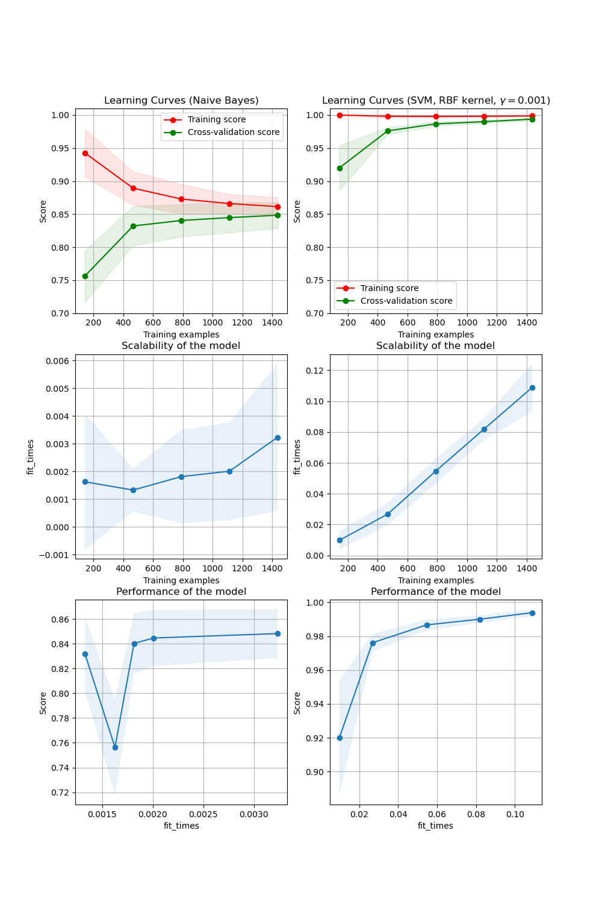

Note
Click here to download the full example code or to run this example in your browser via Binder
Plotting Learning Curves¶
In the first column, first row the learning curve of a naive Bayes classifier is shown for the digits dataset. Note that the training score and the cross-validation score are both not very good at the end. However, the shape of the curve can be found in more complex datasets very often: the training score is very high at the beginning and decreases and the cross-validation score is very low at the beginning and increases. In the second column, first row we see the learning curve of an SVM with RBF kernel. We can see clearly that the training score is still around the maximum and the validation score could be increased with more training samples. The plots in the second row show the times required by the models to train with various sizes of training dataset. The plots in the third row show how much time was required to train the models for each training sizes.
import numpy as np
import matplotlib.pyplot as plt
from sklearn.naive_bayes import GaussianNB
from sklearn.svm import SVC
from sklearn.datasets import load_digits
from sklearn.model_selection import learning_curve
from sklearn.model_selection import ShuffleSplit
def plot_learning_curve(
estimator,
title,
X,
y,
axes=None,
ylim=None,
cv=None,
n_jobs=None,
scoring=None,
train_sizes=np.linspace(0.1, 1.0, 5),
):
"""
Generate 3 plots: the test and training learning curve, the training
samples vs fit times curve, the fit times vs score curve.
Parameters
----------
estimator : estimator instance
An estimator instance implementing `fit` and `predict` methods which
will be cloned for each validation.
title : str
Title for the chart.
X : array-like of shape (n_samples, n_features)
Training vector, where ``n_samples`` is the number of samples and
``n_features`` is the number of features.
y : array-like of shape (n_samples) or (n_samples, n_features)
Target relative to ``X`` for classification or regression;
None for unsupervised learning.
axes : array-like of shape (3,), default=None
Axes to use for plotting the curves.
ylim : tuple of shape (2,), default=None
Defines minimum and maximum y-values plotted, e.g. (ymin, ymax).
cv : int, cross-validation generator or an iterable, default=None
Determines the cross-validation splitting strategy.
Possible inputs for cv are:
- None, to use the default 5-fold cross-validation,
- integer, to specify the number of folds.
- :term:`CV splitter`,
- An iterable yielding (train, test) splits as arrays of indices.
For integer/None inputs, if ``y`` is binary or multiclass,
:class:`StratifiedKFold` used. If the estimator is not a classifier
or if ``y`` is neither binary nor multiclass, :class:`KFold` is used.
Refer :ref:`User Guide <cross_validation>` for the various
cross-validators that can be used here.
n_jobs : int or None, default=None
Number of jobs to run in parallel.
``None`` means 1 unless in a :obj:`joblib.parallel_backend` context.
``-1`` means using all processors. See :term:`Glossary <n_jobs>`
for more details.
scoring : str or callable, default=None
A str (see model evaluation documentation) or
a scorer callable object / function with signature
``scorer(estimator, X, y)``.
train_sizes : array-like of shape (n_ticks,)
Relative or absolute numbers of training examples that will be used to
generate the learning curve. If the ``dtype`` is float, it is regarded
as a fraction of the maximum size of the training set (that is
determined by the selected validation method), i.e. it has to be within
(0, 1]. Otherwise it is interpreted as absolute sizes of the training
sets. Note that for classification the number of samples usually have
to be big enough to contain at least one sample from each class.
(default: np.linspace(0.1, 1.0, 5))
"""
if axes is None:
_, axes = plt.subplots(1, 3, figsize=(20, 5))
axes[0].set_title(title)
if ylim is not None:
axes[0].set_ylim(*ylim)
axes[0].set_xlabel("Training examples")
axes[0].set_ylabel("Score")
train_sizes, train_scores, test_scores, fit_times, _ = learning_curve(
estimator,
X,
y,
scoring=scoring,
cv=cv,
n_jobs=n_jobs,
train_sizes=train_sizes,
return_times=True,
)
train_scores_mean = np.mean(train_scores, axis=1)
train_scores_std = np.std(train_scores, axis=1)
test_scores_mean = np.mean(test_scores, axis=1)
test_scores_std = np.std(test_scores, axis=1)
fit_times_mean = np.mean(fit_times, axis=1)
fit_times_std = np.std(fit_times, axis=1)
# Plot learning curve
axes[0].grid()
axes[0].fill_between(
train_sizes,
train_scores_mean - train_scores_std,
train_scores_mean + train_scores_std,
alpha=0.1,
color="r",
)
axes[0].fill_between(
train_sizes,
test_scores_mean - test_scores_std,
test_scores_mean + test_scores_std,
alpha=0.1,
color="g",
)
axes[0].plot(
train_sizes, train_scores_mean, "o-", color="r", label="Training score"
)
axes[0].plot(
train_sizes, test_scores_mean, "o-", color="g", label="Cross-validation score"
)
axes[0].legend(loc="best")
# Plot n_samples vs fit_times
axes[1].grid()
axes[1].plot(train_sizes, fit_times_mean, "o-")
axes[1].fill_between(
train_sizes,
fit_times_mean - fit_times_std,
fit_times_mean + fit_times_std,
alpha=0.1,
)
axes[1].set_xlabel("Training examples")
axes[1].set_ylabel("fit_times")
axes[1].set_title("Scalability of the model")
# Plot fit_time vs score
fit_time_argsort = fit_times_mean.argsort()
fit_time_sorted = fit_times_mean[fit_time_argsort]
test_scores_mean_sorted = test_scores_mean[fit_time_argsort]
test_scores_std_sorted = test_scores_std[fit_time_argsort]
axes[2].grid()
axes[2].plot(fit_time_sorted, test_scores_mean_sorted, "o-")
axes[2].fill_between(
fit_time_sorted,
test_scores_mean_sorted - test_scores_std_sorted,
test_scores_mean_sorted + test_scores_std_sorted,
alpha=0.1,
)
axes[2].set_xlabel("fit_times")
axes[2].set_ylabel("Score")
axes[2].set_title("Performance of the model")
return plt
fig, axes = plt.subplots(3, 2, figsize=(10, 15))
X, y = load_digits(return_X_y=True)
title = "Learning Curves (Naive Bayes)"
# Cross validation with 50 iterations to get smoother mean test and train
# score curves, each time with 20% data randomly selected as a validation set.
cv = ShuffleSplit(n_splits=50, test_size=0.2, random_state=0)
estimator = GaussianNB()
plot_learning_curve(
estimator,
title,
X,
y,
axes=axes[:, 0],
ylim=(0.7, 1.01),
cv=cv,
n_jobs=4,
scoring="accuracy",
)
title = r"Learning Curves (SVM, RBF kernel, $\gamma=0.001$)"
# SVC is more expensive so we do a lower number of CV iterations:
cv = ShuffleSplit(n_splits=5, test_size=0.2, random_state=0)
estimator = SVC(gamma=0.001)
plot_learning_curve(
estimator, title, X, y, axes=axes[:, 1], ylim=(0.7, 1.01), cv=cv, n_jobs=4
)
plt.show()
Total running time of the script: ( 0 minutes 2.910 seconds)